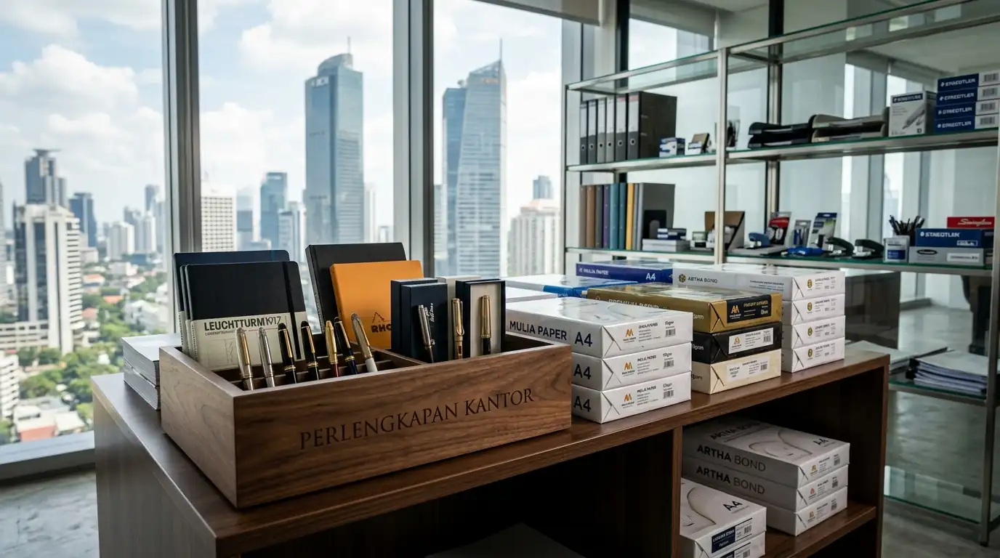

Mengapa memilih distributor ATK grosir Jakarta Barat menjadi keputusan strategis bagi perusahaan?
Memilih distributor ATK grosir Jakarta Barat memberikan keuntungan geografis yang mempercepat pengiriman barang serta efisiensi harga grosir langsung dari tangan pertama.
Wilayah Jakarta Barat merupakan pusat pertumbuhan bisnis komersial dan akses logistik utama yang menghubungkan kawasan perkantoran Jakarta Pusat dengan koridor industri Tangerang dan Bandara Soekarno-Hatta. Mengikat kerja sama pengadaan dengan penyedia lokal memastikan kecepatan waktu pengiriman (lead time) tetap singkat.
Berdasarkan data Indonesia Corporate Procurement Index periode 2024–2025, perusahaan yang mengalihkan kontrak pengadaan alat tulis kantor ke distributor regional berhasil memangkas biaya distribusi logistik hingga 18% dan menekan risiko keterlambatan pasokan barang hingga 24%. Oleh karena itu, bermitra dengan distributor berskala besar di Jakarta Barat merupakan strategi tepat untuk menjaga efisiensi belanja rutin perusahaan.
Bagaimana sistem pengadaan B2B memangkas anggaran belanja ATK harian perusahaan?
Sistem pengadaan B2B memangkas anggaran melalui penerapan harga grosir bertingkat, penawaran kontrak pasokan tahunan, serta eliminasi margin perantara eceran.
Dalam skema pembelian B2B (Business-to-Business), harga item tidak lagi dihitung per unit, melainkan per karton atau per gros. Distributor resmi menyediakan katalog harga khusus korporat yang tidak dapat diakses oleh pembeli eceran. Hal ini memberikan selisih harga hingga 15% hingga 30% lebih hemat dibanding belanja ritel.
Selain itu, perusahaan memperoleh fasilitas sistem nota terpadu dan faktur pajak resmi yang sangat dibutuhkan untuk pelaporan akuntansi dan perpajakan perusahaan. Memenuhi pasokan alat kerja dari jajaran produk perlengkapan kantor berkualitas tinggi menjamin stabilitas aktivitas operasional tanpa kendala teknis.

Gudang persediaan alat tulis kantor dan kertas HVS skala besar siap kirim ke kawasan perkantoran Jakarta Barat.
Matriks Perbandingan Pengadaan ATK Grosir vs Pembelian Eceran
| Kriteria Evaluasi | Distributor ATK Grosir B2B | Pembelian Retail / Toko Eceran |
|---|---|---|
| Harga Per Unit | Harga Grosir Pabrik (Termurah) | Harga Eceran Toko (Tinggi) |
| Sistem Pembayaran | Term of Payment (Credit/Tempo) | Cash / Pembayaran Tunai Langsung |
| Dokumen Transaksi | Faktur Pajak & Invoicing Resmi | Kwitansi Standar Non-Pajak |
| Fasilitas Pengiriman | Gratis Ongkir Logistik Korporat | Biaya Pengiriman Ditanggung Pembeli |
| Garansi Ketersediaan | Kontrak Pasokan Stok Terjamin | Tergantung Sisa Stok Toko |
- Konsolidasi Pemesanan: Gabungkan kebutuhan ATK seluruh divisi ke dalam satu jadwal pemesanan bulanan untuk mencapai kuota diskon volume maksimal.
- Standardisasi Merek Produk: Tentukan 1–2 merek baku untuk kertas, pulpen, dan ordner guna memudahkan audit ketersediaan stok fisik.
- Monitoring Stok Kritis: Tetapkan batas minimum stok (safety stock) sebelum persediaan di gudang logistik internal habis terpakai.
Faktor apa saja yang wajib diperhatikan sebelum memilih mitra distributor ATK?
Faktor yang wajib diperhatikan mencakup keaslian produk, kelengkapan item katalog, fleksibilitas sistem pembayaran, serta ketepatan waktu pengiriman.
Memastikan barang yang dipesan merupakan produk asli dari produsen adalah krusial. Alat tulis berkualitas rendah, seperti kertas fotokopi berdebu tebal atau tinta printer palsu, dapat merusak mesin cetak kantor dalam jangka panjang. Evaluasi juga ketersediaan katalog perlengkapan kantor yang disediakan untuk memastikan seluruh kebutuhan divisi terpenuhi di satu tempat (one-stop supplier).
FAQ tentang Distributor ATK Grosir Jakarta Barat
Kesimpulan Praktis
Bermitra dengan distributor ATK grosir Jakarta Barat adalah solusi paling efisien untuk memenuhi seluruh kebutuhan operasional alat tulis kantor perusahaan Anda. Dengan harga yang kompetitif, ketersediaan stok yang terjamin, serta skema pembayaran yang fleksibel, anggaran pengadaan perusahaan Anda akan terkelola secara optimal. Pastikan aktivitas kantor Anda berjalan tanpa hambatan dengan memesan produk perlengkapan kantor unggulan sekarang juga. Hubungi tim penjualan kami untuk penawaran harga grosir terbaik hari ini.

Penulis: Analis Pengadaan B2B & Fasilitas Kantor
Divisi Pengadaan Barang & Rantai Pasok B2B di Perlengkapan Kantor. Artikel ini telah ditinjau dan divalidasi oleh Konsultan Digital Rantai Pasok Korporat berdasarkan data Indonesia Corporate Procurement Index 2025.